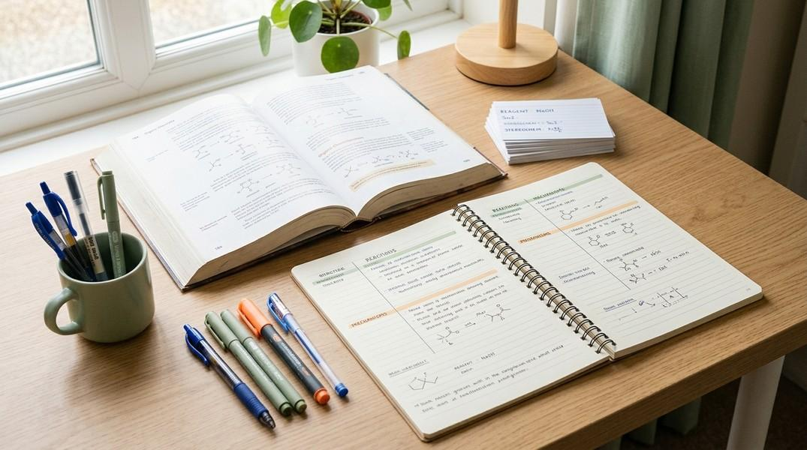
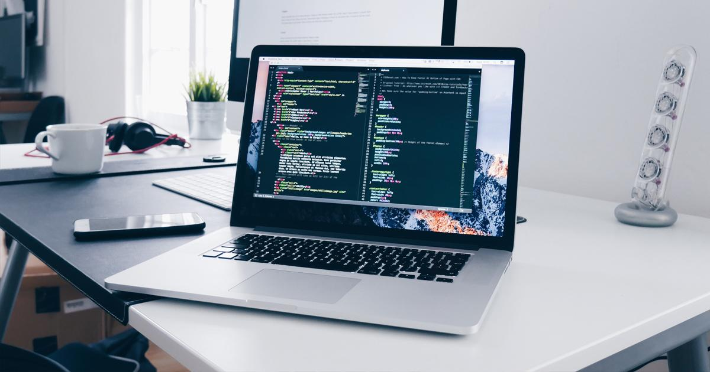

How It Started
Getting into a good engineering college was one of my main goals after school. I prepared for JEE Main and spent a lot of time studying Physics, Chemistry and Mathematics. Some questions were easy, while others needed more practice. There were times when I could not solve a question even after trying several times. Those moments taught me to be patient and try different approaches. My JEE Main percentile was 99.096, and I was happy to reach this milestone.
Getting the opportunity to study at IIIT Lucknow feels like the beginning of a new phase of my life. School and college are quite different. In college, I have to manage my time better and take more responsibility for my studies. I am excited to see what I can learn during the next few years.

My College Life
I am studying Information Technology, so I want to learn more about computers and programming. I have been learning C and C++, and I still find some coding questions difficult. Sometimes my code does not work because of a small mistake, and I have to check it again. But finding and correcting the mistake helps me understand the topic better.

Apart from studies, I am looking forward to meeting new people, making friends and learning from my classmates and seniors. I also want to take part in college activities and explore things outside the classroom. I believe these experiences will help me become more confident and independent.
Things I Want to Do
- Practise coding regularly.
- Build small projects and learn from them.
- Explore different areas of technology.
- Make friends and enjoy college life.
My Goals
For now, I want to focus on learning the basics properly. I do not want to rush through topics without understanding them. My plan is to attend classes, complete assignments on time and practise programming whenever I can. I also want to improve my problem-solving skills by attempting questions on my own before looking for help.
My Priorities
| Area | My Plan |
|---|---|
| Academics | Understand concepts clearly |
| Programming | Solve coding problems |
| Projects | Build useful projects |
| College Life | Try new activities |
I can also visit the official IIIT Lucknow website to learn more about my institute.
Conclusion
Getting into IIIT Lucknow is an important step for me, but I know there is still a lot to learn. I want to improve my skills, learn from my mistakes and make good use of my time here. I may face difficulties along the way, but I hope to handle them with patience and consistent effort. I am looking forward to this new experience and to seeing how much I can grow during my college years.